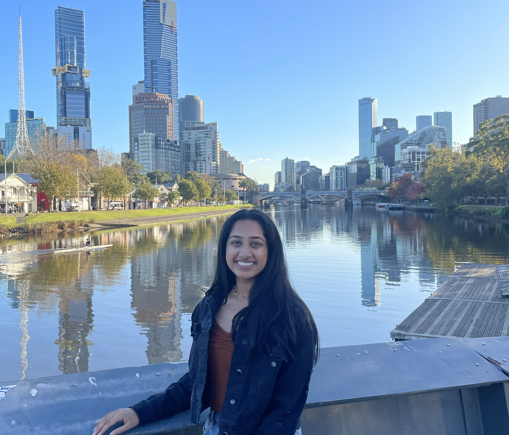
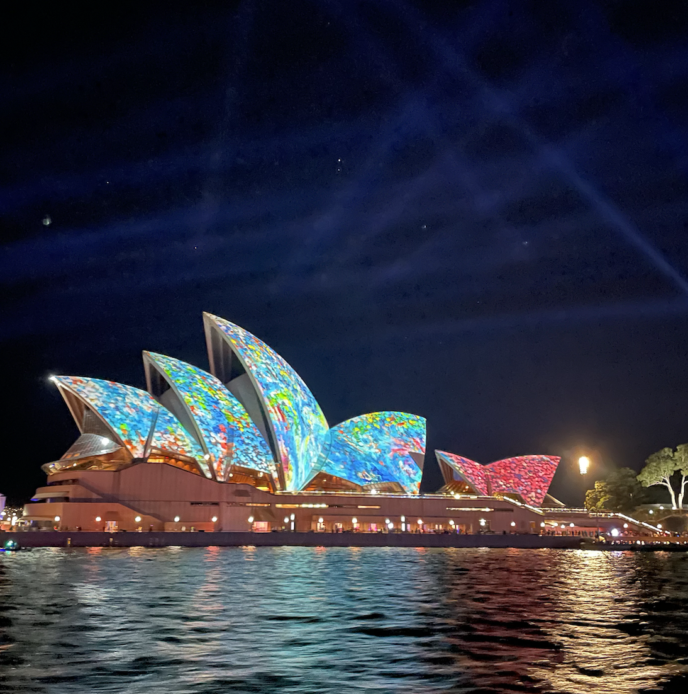
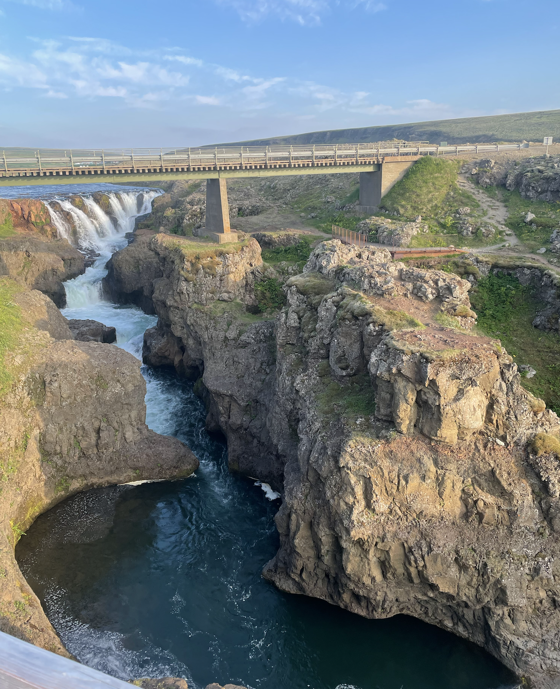
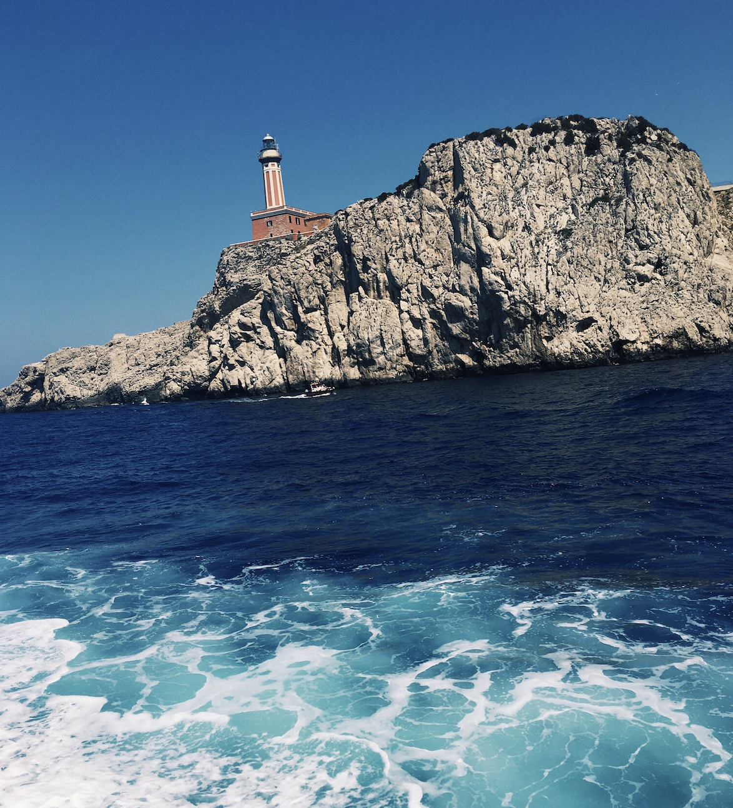
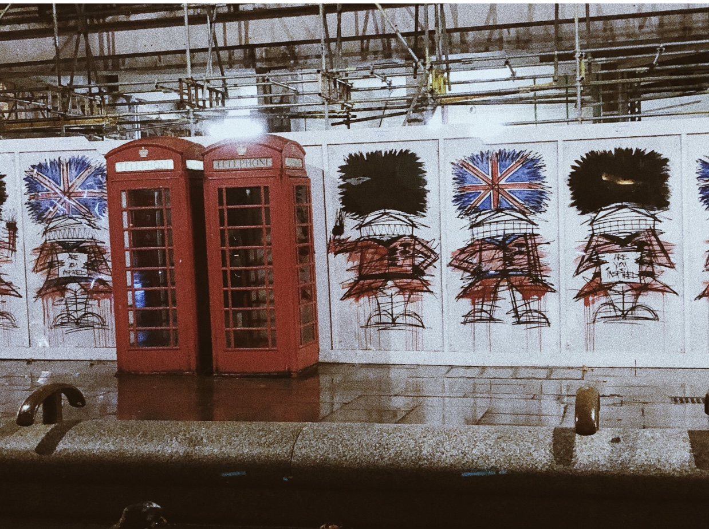
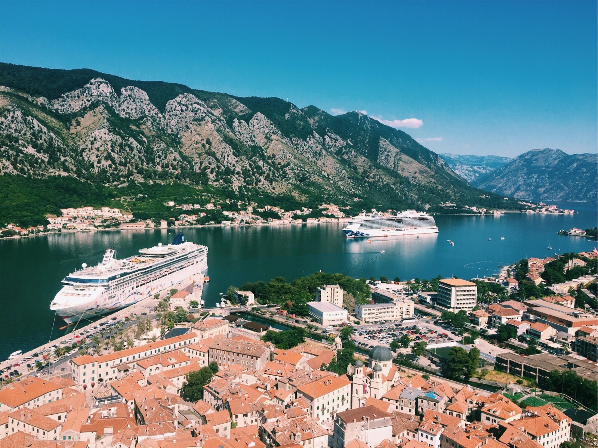
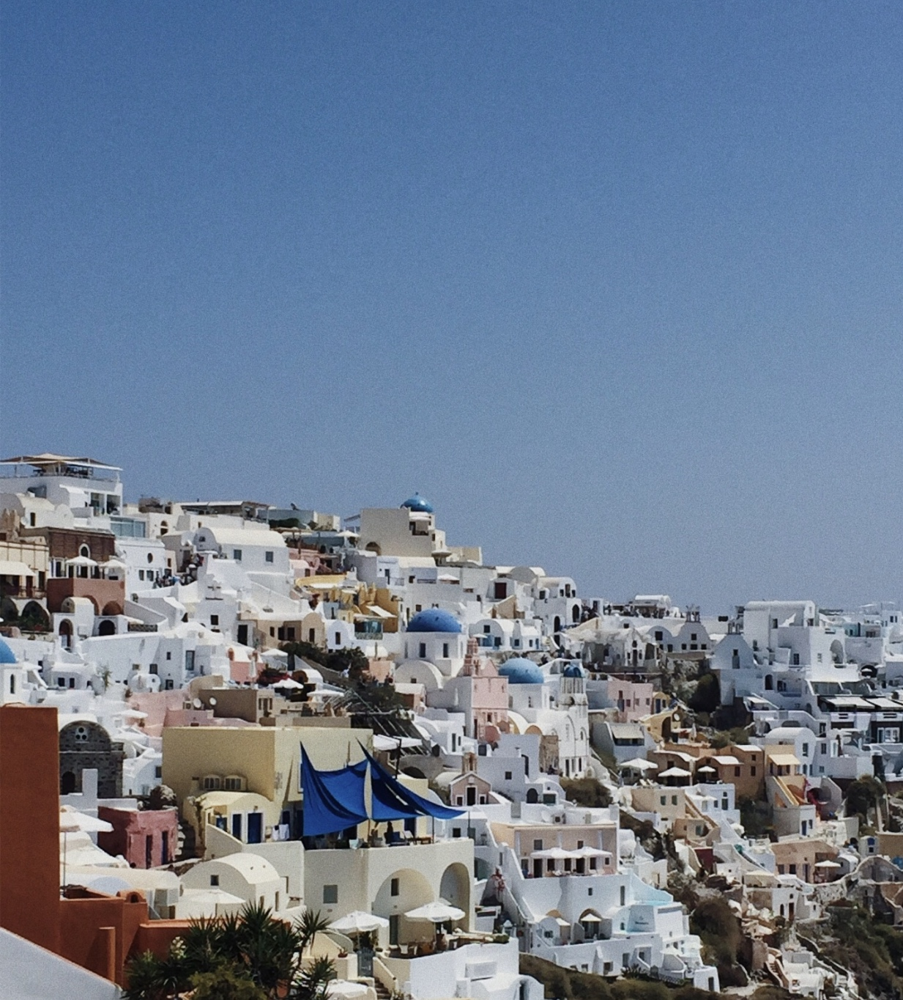

The content below describes my travels around the world with my friends and family.
From one end of the world to another, I have had the privellege to experience a multitude of cultures
and see the natural wonders of the world. I hope to one day visit all of the continents in the world and continue to broaden my mind to the world around us.

During summer of 2021, I attended my cousin's wedding in Australia. While travelling in Australia, I visited Sydney and Melbourne.
One of my favorite memories from the trip was visiting a zoo sanctuary where I was able to see exotic animals up close.
Iv'e never seen a kangaroo or koala up close and seeing these animals in person was so interesting to me.

Driving around Icelend was as peaceful as you would imagine.
Taking in the beautiful scenery you could drive for hours and never get bored of the endless waterfalls and mountains.
My favorite part of this trip was hiking a glacier. Although challenging, it was a once in a lifetime opportunity and I am glad I got to do it.

China was definitely one of the most culturally diverse places I visited. I was forced to step out of my comfort zone and navigate my way through a country primarily speaking mandarin and cantonese.
Walking through the streets I got a glimpse of daily life and even tried different delicacies sold by vendors.
Walking along the Great Wall of China was surreal and the views around me were breathtaking. I even got to see the old terra cotta warriors and bring back a souvenier made with the samw clay!

I have been to India many times before to visit my grandparents and extended family. However, I have never visited north India, and during the Summer of 2019 I got to do that.
My parents booked us a trip to visit New Delhi and I got to see the Taj Mahal in all its glory. The marble masterpiece was so intricate and beautiful it shone brightly on the hot summer day.
It was a fitting gift from a late king to his wife and I could tell why it was one of the wonders of the world.

Capri was a dream. My family and I got to travel the island in a boat with a few other passengers. The water was so blue and clean that it seemed untouched by any sort of pollution.
In the distance there was many people sunbathing and soaking in all of the beauty this place had to offer.
Our tour guide gave us a informative tour taking us to many caves and lighthouses along the way.

I have had so many layover is London when visiting other countries, but I never had the chance to actually explore London. I loved london and all of the iconic spots.
I could see everything perfectly from the London Eye and although there were many aspects of life similar to the United States, I still felt there was a lot unique about London.
Every red phone booth I would see I raced into to try to make a call. It was simple moments like that that made this trip so special and memorable to me.

Montenegro was on of our stops during our cruise. During this day trip, I remember walking up a seemingly never-ending set of stairs.
At the top however, it all was worth it as we took in the breathtaking view around us and appreciated the old architecture this country held.

Every sight in santorini was perfectly sculpted. From the perfeclt spherical blue domes to the angled pristine white walls, every backdrop looked photoshopped.
The entire family and I dressed up in all white and we all practically faded into the scenery. On our way back down from the top, my siblings and I rode down on mules as we marvelled at the scenery around us.
It was truly a fantastic experience.